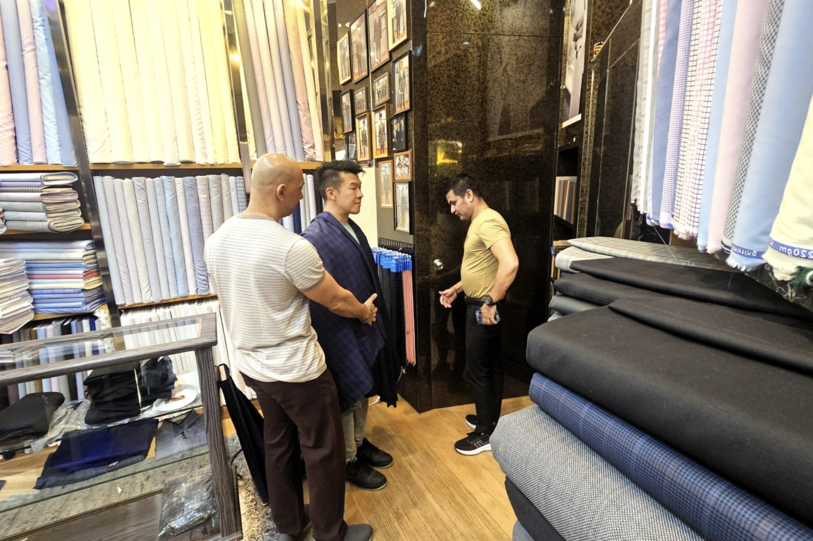
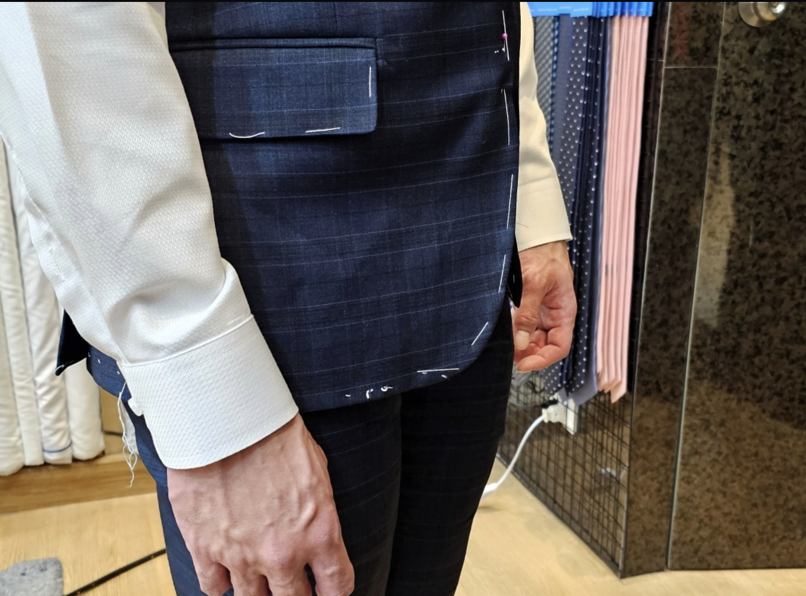
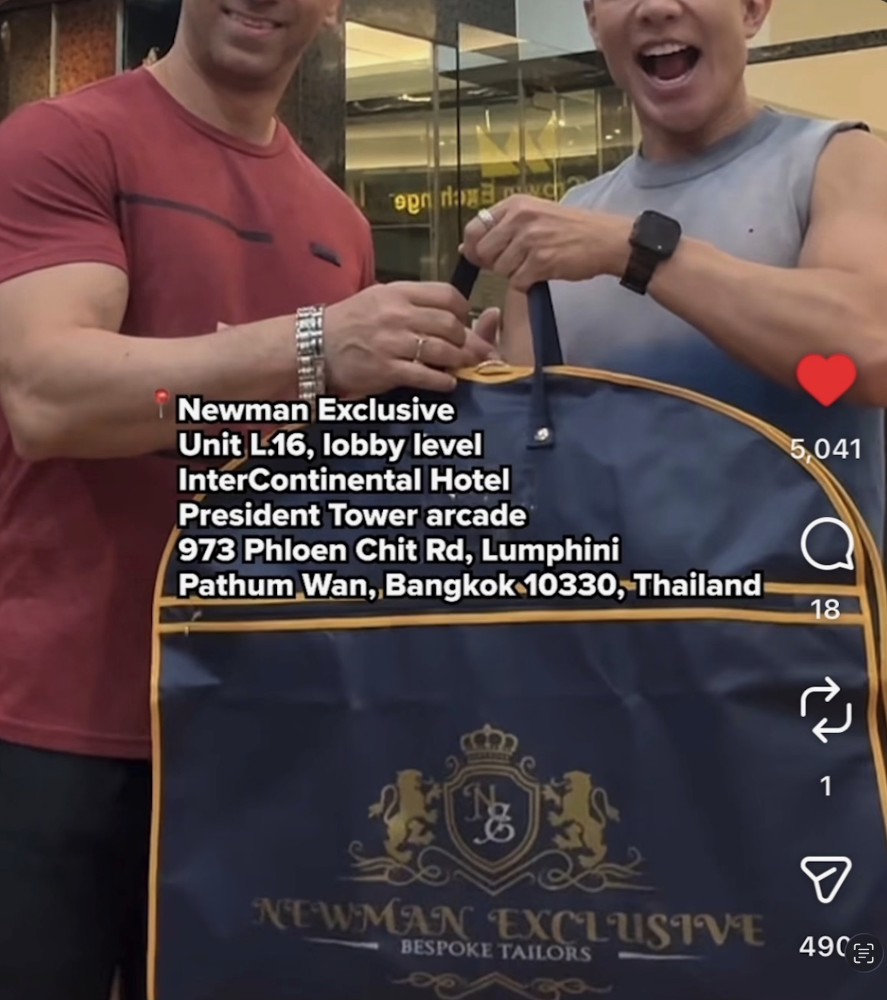

.png)

CONSULTATION & FABRIC SELECTION
Your journey begins with a private consultation. We guide you through our curated library of over 5,000 premium fabrics, including world-renowned mills like Loro Piana, Vitale Barberis Canonico, and Dormeuil.
Here, we define the cut, the lapel style, and the subtle details that will make the garment uniquely yours—from horn buttons to silk linings.
PRECISE MEASUREMENT
A Newman Exclusive suit requires more than just standard dimensions. We take over 30 precise measurements, accounting for your posture, shoulder slope, and natural movement.
This technical blueprint ensures a silhouette that enhances your physique while providing absolute comfort. We aren't just measuring a body; we are measuring an individual.

THE BASTE FITTING
This is the soul of bespoke tailoring. We prepare a "baste"—a temporary skeleton of your suit—for your first fitting. This allows us to make structural adjustments to the drape and flow before the final stitching.
It is during this stage that the perfect fit is truly sculpted to your body, ensuring the fabric follows your lines with effortless grace.

FINAL HANDOVER & DELIVERY
After our master tailors have hand-finished every buttonhole and lining, you return for the final quality check. Perfection is the only acceptable result.
For our international clients, we offer a specialized 3-day turnaround or worldwide shipping, ensuring your wardrobe is delivered with the same precision we apply to our tailoring.